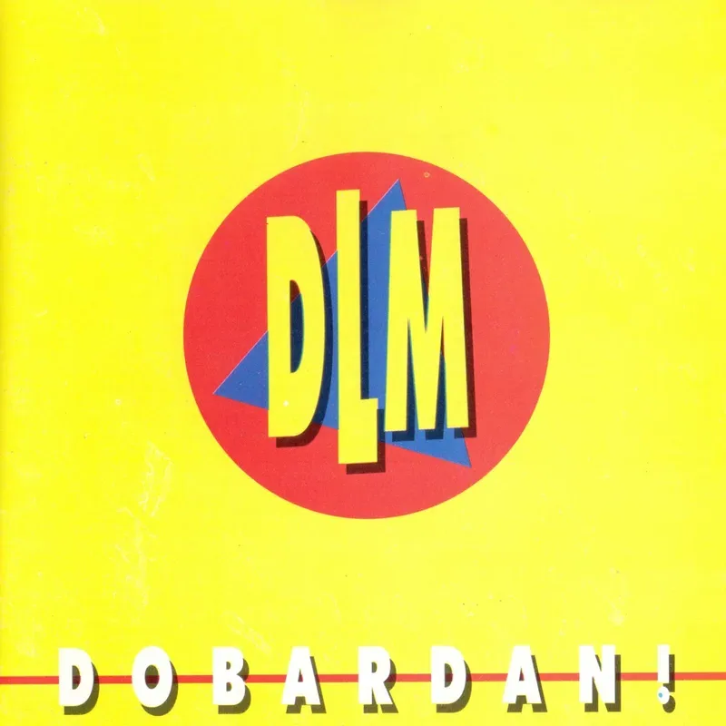
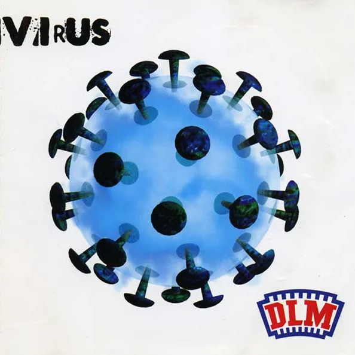
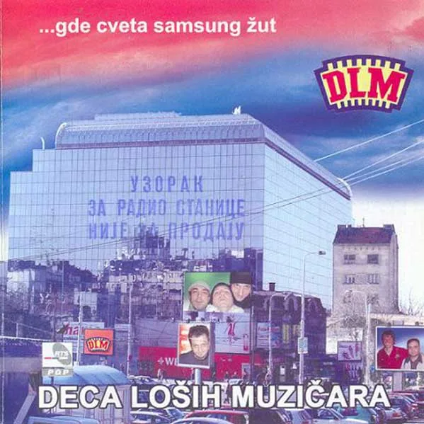
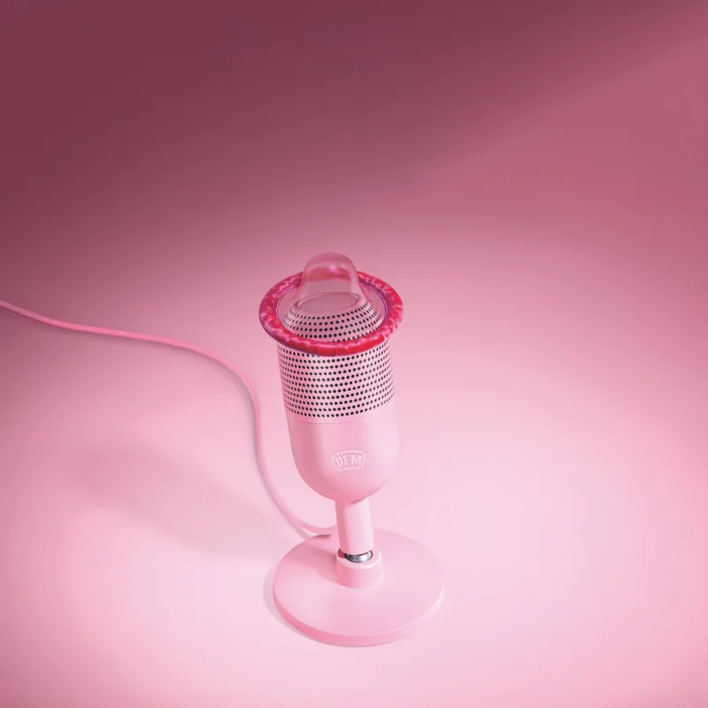

★ #8


Osnovan 1988. Prvo mesto na Festivalu Omladina u Subotici 1990. Predstavljali SR Jugoslaviju na Music Days festivalu u Strazburu.
Jedan od najistaknutijih bendova srpske rock scene devedesetih. Debi Dobardan! (1992) producirao je Vlada Žeželj, a "Kreditna kartica", "Zeka", "Ljubomora" i "Mara" doneli su bendu ozbiljnu radijsku prisutnost.
Sa Prolećnog dana (1995) stiže antologijska "Vlade Divac", a Virus (1998) bend piše za predstavu Dušana Kovačevića. Peti album, Ustani Slaj Stoune, Srbija te zove, izlazi 2025, dvadeset godina posle prethodnog.
Diskografija od 1992. do danas. Dobardan! — 8. na listi najboljih srpskih albuma posle raspada SFRJ.
Ovaj zvuk nije bugi vugi.




Spotovi i live snimci.